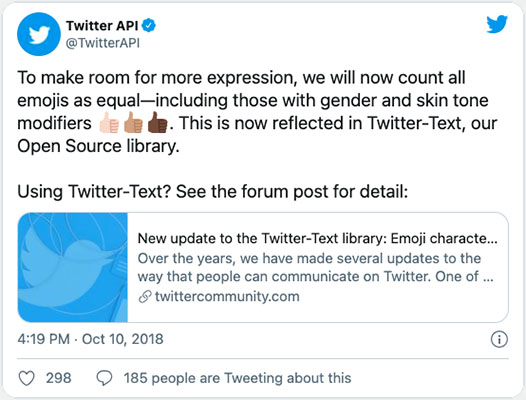
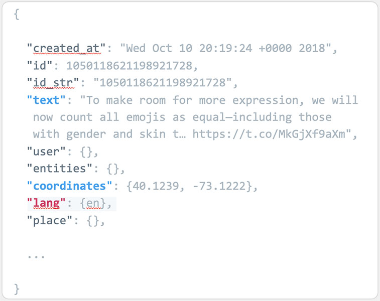
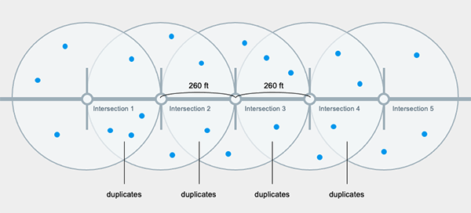
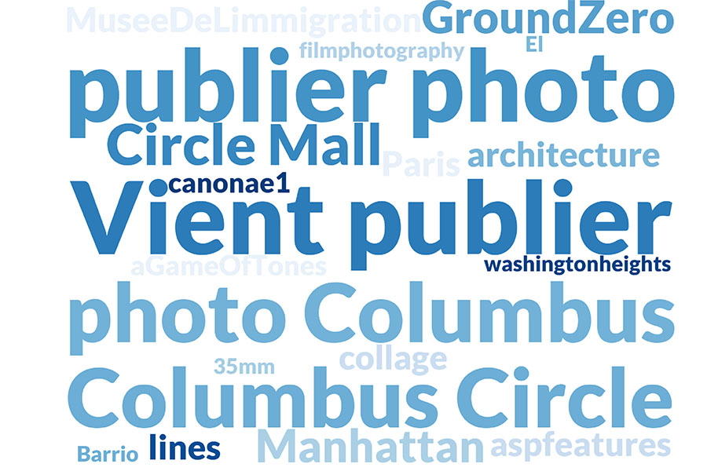

This project initially started with inspiration from Becky Cooper's book, Mapping Manhattan. In the book, Cooper walked Manhattan from end to end along Broadway and asked police officers, homeless people, fashion models, and senior citizens to "map their Manhattan". Altogether, the book compiles 75 maps from New Yorkers from all parts of the town.
Could a similar story be extracted from looking through tweets geolocated along Broadway? Tweets on Broadway queried data from Twitter's API in search for qualitative data in neighborhoods that align Broadway.
Tweet Object

.json

As shown above, the API returns a list of data including each tweet's creation date, text, coordinates, and language. To query for tweets along Broadway, we extracted coordinates from each intersection node along Broadway and set the search radius to 520-feet (roughly the distance from street to street each way in a typicall Manhattan block). Then removing duplicates and other NA values, we ended up with a total of 1,794 tweets from the first week of december.
The resulting tweets were mapped in Leaflet as shown below:
Upon closer examination of the languages that make up the queried data, it becomes evident that English makes up over 95% of the tweets along Broadway. The Seaborn barplot below shows most tweeted languages other than English.
Then word clouds were made to visualize some of the words most tweeted by the top three languages (other than English).
Spanish
French

Japanese
The interactive map helps visualize which neighborhoods are more active with tweets. Looking closely at each tweet we can examine trends across different languages. Despite the limitations of standard Twitter API, from a small sample size of tweets, visualizing geolocated tweets can become an informative tool for anyone and a fun way to see what is happening in the city in real-time.